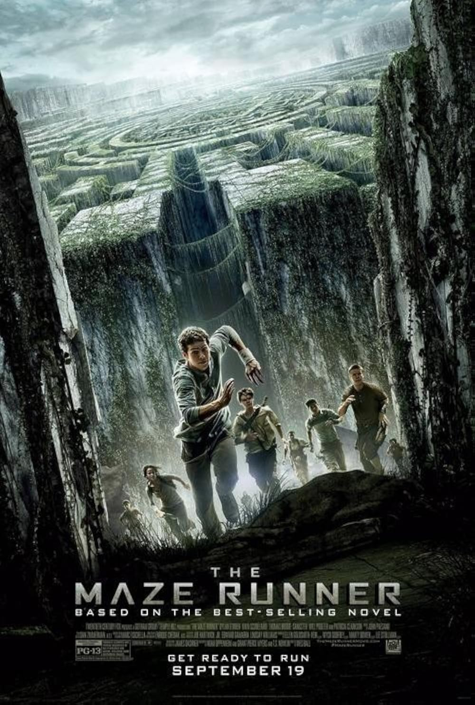

Author: James Dashner
The Maze Runner is a science fiction novel about a teenager named Thomas who wakes up in a mysterious place called the Glade with no memory of his past. He and the other teenagers must work together to find a way through a dangerous maze and discover why they were placed there.
I chose this book because it has mystery, action, and suspense. The challenges of the maze make the story exciting and unpredictable.